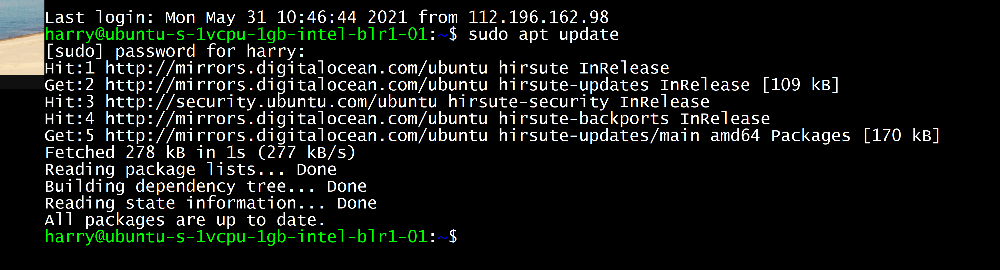
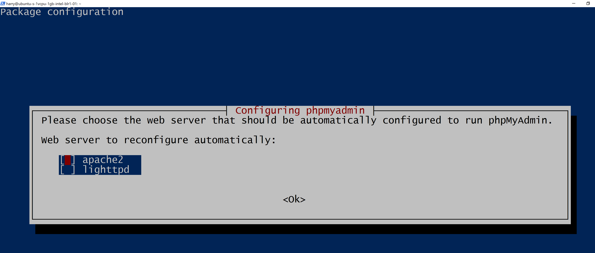
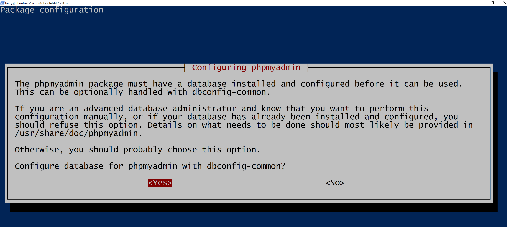
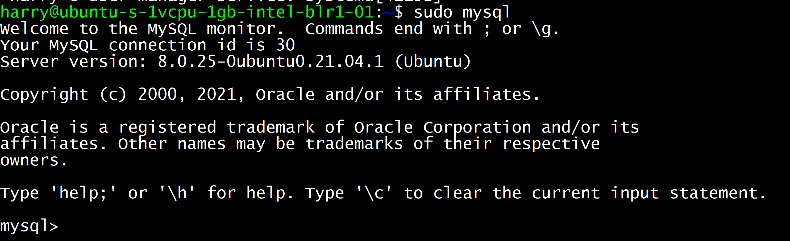
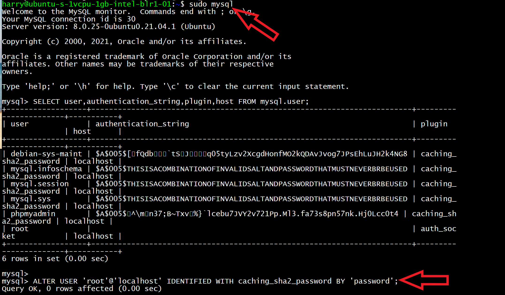
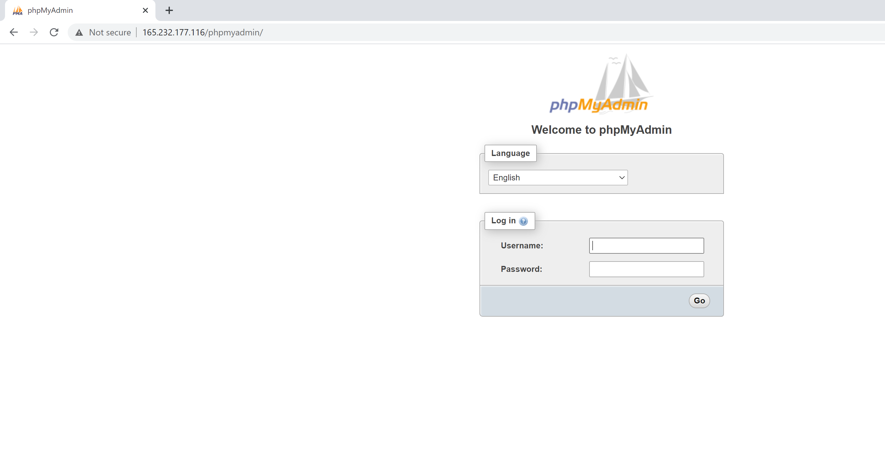

In this video, we will see how to install and secure phpMyAdmin on Ubuntu 20.04. phpMyAdmin was created to easily interact with MySQL databases using a web-based interface. I will assume that you have configured a non-root user on your ubuntu machine and installed the lamp stack.
We will also see how to enable password authentication on MySQL which supports socket-based authentication by default.
Let's update our server's package index
sudo apt update
Run the following command to install phpMyAdmin and related packages
sudo apt install phpmyadmin php-mbstring php-zip php-gd php-json php-curl
Using this command we installed the following packages:
While installing PHPMyAdmin you will see a prompt that will ask you to select the webserver. Press <Spacebar> <Tab> and then enter key to continue the installation.
You will also be asked to continue with dbconfig-common setup. Press enter to confirm.
Finally, choose and confirm a strong password for PHPMyAdmin. If you get a prompt asking for the services which need to be restarted, simply press the "tab" and then "enter" key to continue. Phpmyadmin is now installed on your Ubuntu server
to use MySQL we need to enable password login in MySQL. enter the following command to launch the MySQL console:
sudo mysql
Now enter the following query to enable password authentication in MySQL
ALTER USER 'root'@'localhost' IDENTIFIED WITH caching_sha2_password BY 'MyStrongPassword1234$';
Please make sure you choose your own password and not the one which I chose
('MyStrongPassword1234$')
You can always check the authentication method used by using the following MySQL query:
SELECT user,authentication_string,plugin,host FROM mysql.user;
Exit from the MySQL console by typing exit.
Now you can log in using your MySQL password by entering the following command to the MySQL console
sudo mysql -u root -p
Since its not a good idea to use root as your login user, we will create another MySQL user named harry to login to the PHPMyAdmin console:
Execute the following query:
CREATE USER 'harry'@'localhost' IDENTIFIED WITH caching_sha2_password BY 'MyStrongPassword1234$';
This creates a user named harry with the password - 'MyStrongPassword1234$'
Let's provide this user all the privileges so that we can use it to access the PHPMyAdmin console. Execute the query below
GRANT ALL PRIVILEGES ON *.* TO 'harry'@'localhost' WITH GRANT OPTION;
You can now exit the MySQL shell:
exit
Go to the browser and type 'http://your_domain_or_IP/phpmyadmin' in your URL bar. You will see an option to log into your PHPMyAdmin console. Enter the username (harry in my case) and password you chose for this user.
You will be logged in to PHPMyAdmin.
Enjoy managing your MySQL databases with ease and security. Happy coding!